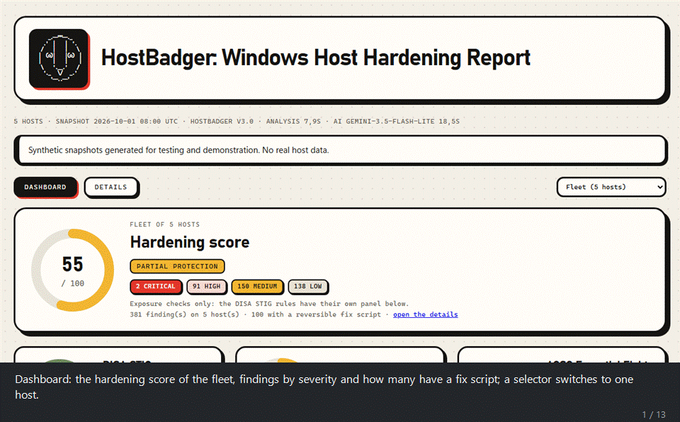

_.--""--._
.' | | '.
/ | | \
| (o)| |(o) |
| | | |
\ '.__.' /
'._ \/ _.'
'--..--'
A Windows host hardening auditor. One read-only script collects the host, the analysis runs anywhere else, offline, and the report says what is weak, what it means and what could not be judged at all.
The report below is the real output of HostBadger on a synthetic fleet of five hosts, shipped in
the repository as examples\demo_report.html. It is one HTML file with no server behind
it: open it, switch host, expand a check, read the fix script.

Collect-HostSnapshot.ps1 is a single self-contained script, so your EDR console,
RMM or GPO can run it as it is. It reads: no Set-, no New-, no
Remove-, no CIM method call. A section that fails is recorded as a collection
error, never as a clean result.
The snapshot is judged on your own machine. 234 checks across 13 categories, per host and across the fleet (shared local passwords, cloned machine SIDs, configuration drift). Snapshots can be encrypted with a password or a certificate before they leave the host.
65 checks come with a generated fix: one setting, the expected value, reversible, previewed by default and with a rollback file. Three hardening profiles (146 settings) go further when you ask for them, and every item quotes the rule it comes from.
New in v3.0: the findings read as chains instead of one weakness at a time. 10 chains tie each stage - initial access, execution, privilege escalation, defence evasion, credential access, lateral movement, persistence, impact - to the checks that look for the condition that stage needs, and the dashboard draws them per host.
The same discipline applies to the 32 attack vectors of 2022-2026 that the report maps: only the checks that look for the condition a vector needs decide whether a host is exposed; a check that merely makes it worse is shown as context, and never counted as exposure.
A snapshot is a configuration, not a stream of events. The report lists every check it could not judge and why, instead of counting it as clean; the coverage document names the kinds of attack a configuration can say nothing about; and no framework panel is presented as a certification of conformity.
The analysis makes no network call. The catalogues (CISA KEV, LOLDrivers, NVD, endoflife.date) are downloaded only when you pass the switch for them, from their own address and nothing else. The optional AI summary is opt-in, and every host, account, service and path name is replaced by a token before anything is sent - checked, not promised.
STIG releases, CIS versions and the Essential Eight model live in the shipped catalogues, and the documents are generated from them. The tool cannot quote a release it was not built from, and a developer tool reports when a newer one exists.
Remediation is a script you read first. It previews by default, applies only after you type YES, takes a System Restore point where it can and writes a rollback file. A fix that needs an organizational decision stays out of the automatic set.
Test-HostBadgerSafety.ps1 parses the shipped scripts and fails on anything that
writes, on compiled code and on network calls outside the one file allowed to make them. The
regression suite runs on PowerShell 7 and on Windows PowerShell 5.1 at every change.
HostBadger is written and maintained by Gabriele Piccini. It started as the tool I wanted while auditing Windows estates: something that could be handed to whoever holds the console, that collects once without touching anything, and that is honest about the difference between "this is wrong" and "I could not see this".